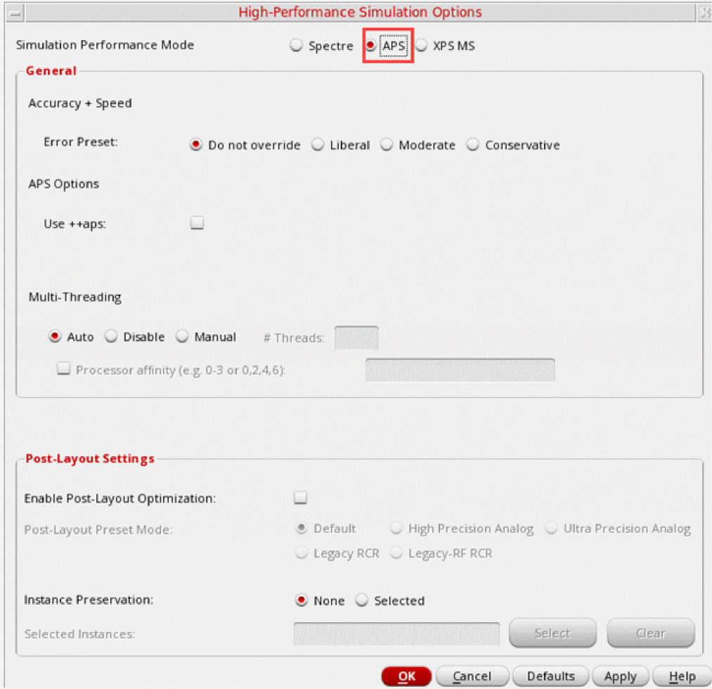
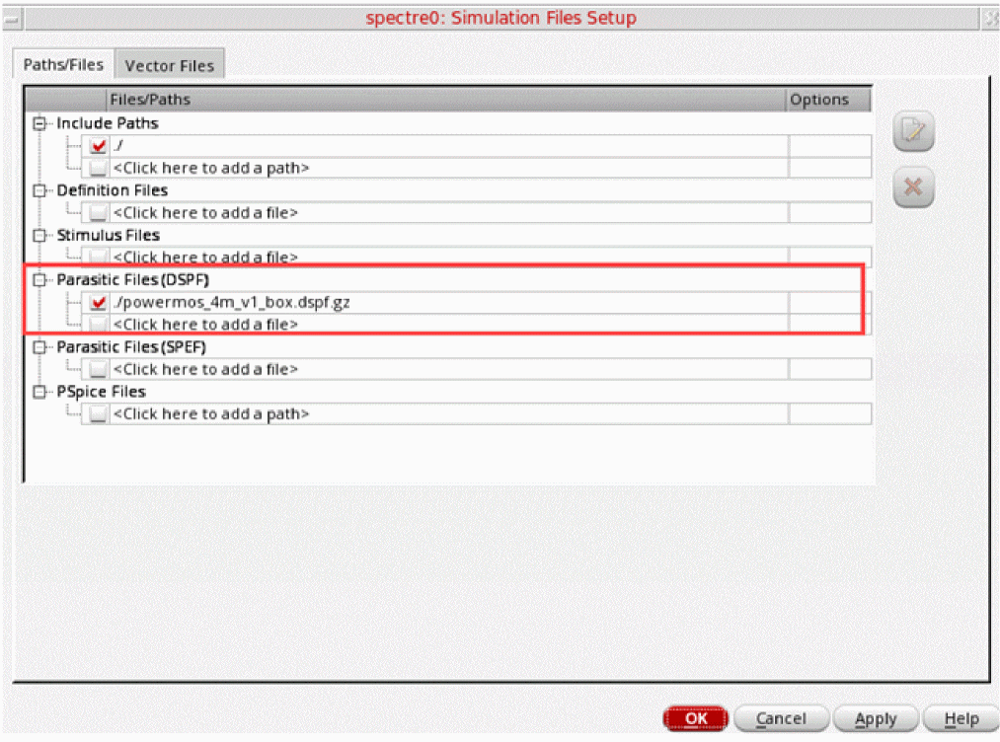
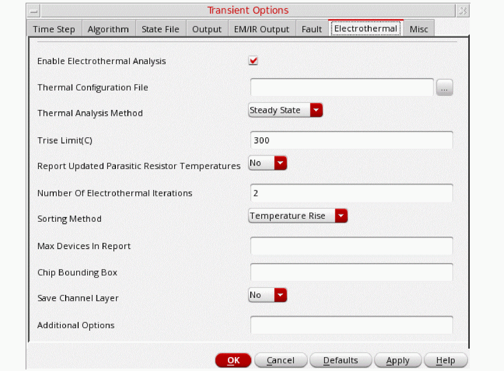

2
Electrothermal Analysis
Many analog circuits for complex technologies operate at high power. The combination of high-power dissipation in a high-temperature environment can result in thermal over-stress. The stress of operating at high temperature can cause devices that have been designed for a long operating lifetime to fail sooner. The electrothermal analysis feature of the Legato Reliability solution enables designers to prevent thermal over-stress and avoid such premature failures.
In electrothermal analysis, a simulation is performed using Cadence Thermal Technology that delivers true electrothermal co-simulation. In this flow, thermal technology is used to create a thermal model of the die, based on the chip structure and thermal properties of the die stack. This model is a thermal equivalent circuit of the die. Electrothermal analysis uses the electrical and thermal descriptions of the circuit, the netlist, and the thermal model to perform co-simulation. It considers the thermal interactions between devices. In addition, it considers all the power sources in the chip, including transistors, resistors, and other devices.
The electrothermal analysis consists of the following components:
-
Spectre APS for electrical simulation
Spectre APS is used for electrical simulation, which computes the power of each power dissipating instances in the circuit: MOS transistors, resistors, diodes, and bipolar transistors. -
Cadence Thermal Technology
The thermal technology is called internally by Spectre APS to perform thermal extraction of the die and to create the thermal model used in simulation. -
Spectre APS for thermal simulation
Spectre APS is used for thermal simulation. It calculates the instance temperatures based on the power consumption of the instances. The thermal solver is built into the electrothermal simulation and is not available as a standalone offering.
Spectre APS automatically maps the information from the electrical simulator, power, to the thermal solver and maps the information from the thermal solver, temperature, back to the electrical simulator.
Electrothermal analysis starts with an electrical simulation and uses the instance power to drive a thermal solution to calculate the temperature of the instances on the die. If the temperatures converge, the simulation is complete. If not, the thermal and electrical simulation process continues until the results converge to a stable solution that satisfies both the circuit electrical power and the circuit temperature condition. This process is called electrothermal co-simulation or electrothermal simulation.
Electrothermal Analysis Methods
Electrothermal analysis supports the following two methods:
Steady-State Thermal Analysis
In steady-state thermal simulation, electrothermal simulation starts with an electrical simulation with the device temperatures initially set to the ambient value.
Upon completion of the electrical simulation, the average power of all the devices is computed and sent to the thermal solver to compute the temperature rise for each device as a result of the steady-state instance power. The calculated instance temperatures are then used to update the instance temperatures for the next iteration of the electrothermal simulation. The process continues until the user-specified iteration count is reached. The output of the steady-state thermal simulation is a text report, which lists the temperature rise and the average power of each device in the DSPF netlist.
The thermal model is then used in thermal simulation to simulate the temperature rise due to device power dissipation.
Dynamic Thermal Analysis
Dynamic thermal analysis is run by performing thermal solving at each time step of the Spectre transient analysis. Because thermal variation is usually much slower than electrical variation, it is assumed that convergence of electrothermal co-simulation is always achieved with just one iteration at each time step. Therefore, no iterations are needed for the electrothermal co-simulation during dynamic thermal analysis. This greatly increases the efficiency of the dynamic thermal analysis algorithm without introducing significant errors.
Performing Electrothermal Analysis in Spectre Command-Line Mode
To perform electrothermal analysis in Spectre command-line mode, follow these steps:
-
Prepare the simulation testbench including the postlayout data of the design, and the DSPF files with device location and dimension information for the transistors, resistors, diodes, and so on, in the instance section. A
dspf_includestatement is required in the electrothermal analysis flow to identify the DSPF data.dspf_include “sram.spf” (Spectre syntax)
.dspf_include “sram.spf” (SPICE syntax)
dspf_includeprovides special features for reading the DSPF format data, for example, port order adjustments, or handling of duplicated subcircuits. Do not use theinclude/.includecommands to read the DSPF format data because these commands do not have the special functions of thedspf_include/.dspf_includecommand.After setting up the testbench, you should perform a regular (non-electrothermal) postlayout simulation with the spectre command to ensure that the testbench contains no error, and the circuit behaves as expected.% spectre +aps input.scs (Spectre test bench)
-
Add a reliability block containing the thermal analysis statement which defines the thermal configuration file, as shown below.
rel reliability
{
myThermal thermal config “thermal.conf” <options>
{
tran_thermal tran stop=100n
}
}
The thermal configuration file consists of two parts, the location of the data files required for thermal analysis, and additional options. The following two files are required for electrothermal analysis:
The thermal technology file is defined with the keywordtech_filein the thermal configuration file and describes the die stack. It is the thermal equivalent of the ICT file and contains the thickness and the thermal properties of the materials of the die stack.
thermal tech_file = "tech.txt"
The thermal package file is defined with the keywordpackage_filein the thermal configuration file and describes the thermal characteristics of the package, which define the boundary conditions for thermal analysis.thermal package_file = "pkg.txt"
-
Run the simulation, as shown below.
% spectre +aps input.scs
reliability block. All electrothermal related options are defined either as options to the thermal analysis statement or in the thermal configuration file.Viewing Electrothermal Analysis Output in Spectre Results
As the simulation runs, Spectre outputs messages to the screen and the simulation log file that shows the progress of the simulation and provides statistical information. After the simulation completes, electrothermal analysis generates a report file with the extension .thermal_rpt and the iteration count in the raw file directory after each iteration. It reports the temperature rise and power value on each device in the DSPF file. The last of these reports can be used as the final result of the electrothermal analysis. The following is a sample report that is generated
For more information on Electrothermal analysis refer to the Spectre Thermal Analysis section in the Spectre Classic Simulator, Spectre Accelerated Parallel Simulator (APS), and Spectre Extensive Partitioning Simulator (XPS) User Guide.
Performing Electrothermal Analysis in Virtuoso ADE Assembler
Pre-requisites for Electrothermal Analysis
Before running electrothermal analysis in Virtuoso ADE Assembler, ensure that you have the following files:
- A thermal configuration file that contains the path to the following two files:
- A DSPF file that contains the electrical and geometric information required for thermal analysis
In addition, ensure that you are using Spectre 18.1 ISR5 or a higher version.
Running the Electrothermal Analysis
To perform electrothermal analysis in Virtuoso ADE Assembler, follow these steps:
-
In the Data View assistant, right-click a test and choose High-Performance Simulation.
The High-Performance Simulation Options form is displayed. -
Enable the Spectre APS mode, as shown below.
 - In the Data View assistant, right-click a test and click Simulation Files to open the Simulation Files Setup form.
-
In the Simulation Files Setup form, specify the name of the DSPF file mentioned in Pre-requisites for Electrothermal Analysis.
 - In the Data View assistant, expand the Analysis tree for a test, and click Click to add analysis to add a tran (transient) analysis.
- In the Choose Analysis form, select tran, and click Options to open the Transient Options form.
-
Open the Electrothermal tab and check the Enable Electrothermal Analysis check box.
The other fields on this form are enabled. -
Perform the following steps on the Electrothermal tab:
- Specify the path to the thermal configuration file mentioned in Pre-requisites for Electrothermal Analysis.
-
Choose the required method,
Steady StateorDynamic State, in the Thermal Analysis Method drop-down list.
For details about the thermal analysis methods, refer to Electrothermal Analysis Methods. -
Review and if required, modify other settings on this tab.
The following table describes the other fields on the Electrothermal tab:
- Click OK to save the settings and close the Transient Options form.
- Run simulation.
Viewing Results of Electrothermal Analysis
After the simulation for a steady state electrothermal analysis is complete, the results are displayed in the Results tab.
Right-click on an output value and choose Electrothermal Report to view a detailed report, as shown below.
You can see a similar report for the dynamic electrothermal analysis too. In addition, you can plot graphs to show the Trise values for the devices specified in the Devices in Thermal Report field on the Electrothermal tab of the Transient Options form.
To plot the graphs for the saved devices, open Results Browser and plot the results of transient analysis, as shown below.
Alternatively, you can create outputs on the Outputs Setup tab by using the following expressions:
(getData "totalPwr" ?result "input.temp_probe-tran")
(getData "maxTrise" ?result "input.temp_probe-tran")
(getData "minTrise" ?result "input.temp_probe-tran")
(getData "avgTrise" ?result "input.temp_probe-tran")
After the simulation run is complete, these expressions result into waveforms that you can double-click and plot in Virtuoso Visualization and Analysis XL.
Return to top